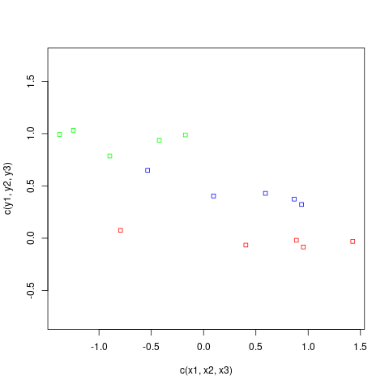
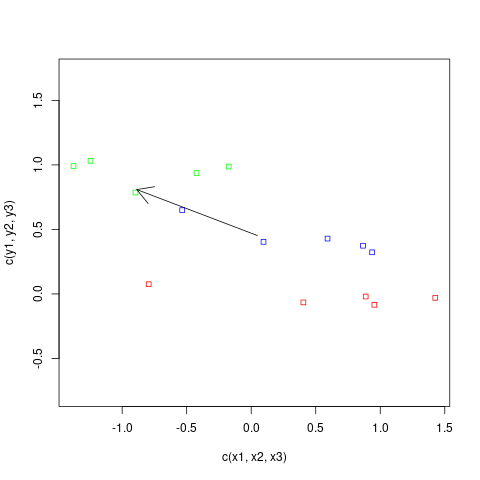
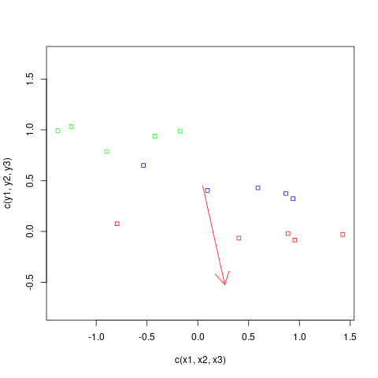

|  |
|---|
| The 15 points |
|  |
|---|
| The first eigenvector |
W1 = cov(dat[1:5,]) #cov of the first 5 points (cluster 1) W2 = cov(dat[6:10,]) W3 = cov(dat[11:15,]) W = (5-1)*(W1+W2+W3)/(15-1) #combined (the denominator is n-1)Next, the between matrix:
m1 = apply(dat[1:5,],2,mean) #Mean of the first cluster
m2 = apply(dat[6:10,],2,mean)
m3 = apply(dat[11:15,],2,mean)
B = 5*cov(rbind(m1,m2,m3)) #Cov matrix when all points in a
#cluster equals the cluster mean
Now we solve this problem:
$$
\max \frac{\v x' B \v x}{\v x' W \v x}
$$
subject to $\|\v x\|=1.$ Hopefully this would give a
direction along which the clusters will differ the most, but the
points within the clusters won't differ much.
|  |
|---|
| The new direction |